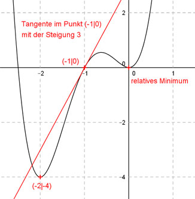

Aufgabe 98 Der Graph einer ganzrationalen Funktion 4. Grades geht durch den Punkt (-2|-4), hat im Koordinaten- ursprung ein relatives Minimum und im Punkt (-1|0) die Steigung 3. Wie lautet seine Funktionsgleichung?  Allgemeine Form einer ganzrationalen Funktion 4. Grades: f(x) = ax4 + bx3 + cx2 + dx + e f’(x) = 4ax3 + 3bx2 + 2cx + d f’’(x) = 12ax2 + 6bx + 2c 5 Bedingungen: 1. Geht durch den Punkt (-2|-4) bedeutet: f(-2) = -4 --> a * (-2)4 + b * (-2)3 + c * (-2)2 + d * (-2) + e = -4 --> 16a - 8b + 4c - 2d + e = -4 I 2. Hat im Koordinatenursprung ein relatives Minimum bedeutet zum einen: f(0) = 0 --> a * 04 + b * 03 + c * 02 + d * 0 + e = 0 --> e = 0 3. Hat im Koordinatenursprung ein relatives Minimum bedeutet zum anderen: f’(0) = 0 --> 4a * 03 + 3b * 02 + 2c * 0 + d = 0 --> d = 0 4. Hat im Punkt (- 1|0) die Steigung 3 bedeutet zum einen: (d = 0 und e = 0 eingesetzt) f(-1) = 0 --> a * (-1)4 + b * (-1)3 + c * (-1)2 = 0 --> a - b + c = 0 II 5. Hat im Punkt (- 1|0) die Steigung 3 bedeutet zum anderen: (d = 0 eingesetzt) f’(-1) = 3 --> 4a * (-1)3 + 3b * (-1)2 + 2c * (-1) = 3 --> -4a + 3b - 2c = 3 III I (d = 0 und e = 0 eingesetzt) + II * (-4) 16a - 8b + 4c = -4 -4a + 4b - 4c = 0 ------------------- 12a - 4b = -4 IV II * 2 + III 2a - 2b + 2c = 0 -4a + 3b - 2c = 3 ------------------- -2a + b = 3 V IV + V * 4 12a - 4b = -4 -8a + 4b = 12 -------------- 4a = 8 |:4 a = 2 a = 2 in IV eingesetzt. 12 * 2 - 4b = -4 24 - 4b = -4 |-24 -4b = -28|:(-4) b = 7 a = 2 und b = 7 in III eingesetzt: -4 * 2 + 3 * 7 - 2c = 3 -8 + 21 - 2c = 3 13 - 2c = 3 |-13 -2c = -10 |:(-2) c = 5 Gesuchte Funktionsgleichung: f(x) = 2x4 + 7x3 + 5x2